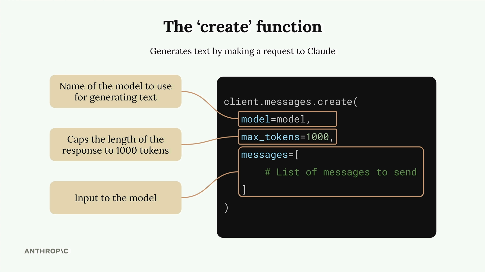
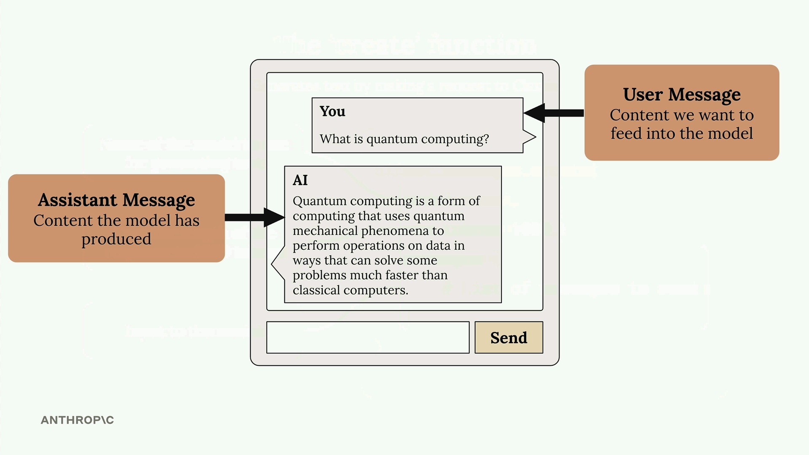

Claude with Google Cloud's Vertex AI
เนื้อหาเทียบเท่าคอร์ส API/Bedrock แต่เรียก Claude ผ่าน Google Vertex AI — เพิ่มขั้นตอน Vertex AI Setup และ RAG ที่มี reranking + contextual retrieval
ℹ️
โครงสร้างเหมือนคอร์ส API/Bedrock เนื้อหาหลักเหมือนกัน (API basics, prompt engineering/eval, tool use, RAG พร้อม reranking + contextual retrieval, features, MCP, agents) เพียงเปลี่ยน endpoint เป็น Vertex AI — ด้านล่างเน้น เฉพาะส่วนที่ต่าง ดูเนื้อหาหลักได้ที่ Building with the Claude API
🔵 Vertex AI Setup
สิ่งที่ต่างชัดที่สุดของคอร์สนี้คือขั้นตอน เปิดใช้ Anthropic models ใน Vertex — ตั้งค่าผ่าน console.cloud.google.com/vertex-ai/dashboard ให้เรียบร้อยก่อน จึงจะเรียก Claude ผ่าน Vertex ได้
📡 Making a request ผ่าน Vertex AI
เมื่อตั้งค่าเสร็จ การยิง request ไปยัง Claude ก็ทำผ่าน Vertex AI แทน endpoint ของ Anthropic โดยตรง


🔎 RAG: เหมือน Bedrock
เช่นเดียวกับคอร์ส Bedrock ส่วน RAG ของ Vertex มีทั้ง reranking (จัดอันดับผลใหม่ให้ตรงขึ้น) และ contextual retrieval (เติม context ในแต่ละ chunk ก่อนเก็บเพื่อความแม่นยำ)
🎯 สรุปใจความสำคัญ
- เนื้อหาหลักเหมือนคอร์ส API/Bedrock แต่เรียก Claude ผ่าน Google Vertex AI
- จุดต่างหลักคือต้องทำ Vertex AI Setup (เปิดใช้ Anthropic models) ก่อน
- ยิง request ไป Claude ผ่าน Vertex AI แทน endpoint ตรงของ Anthropic
- RAG มี reranking + contextual retrieval เช่นเดียวกับ Bedrock